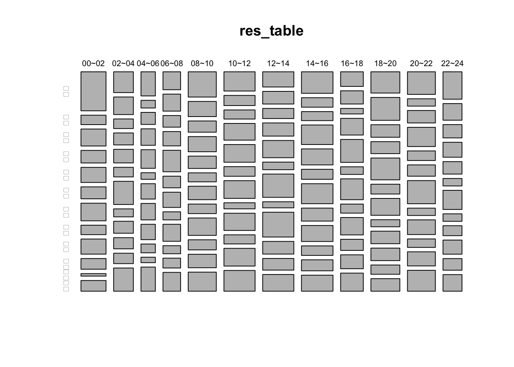
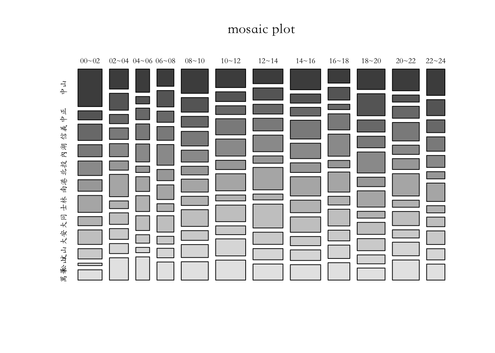

Chapter 5 Using base R
R base指的是R語言的基本程式庫和核心功能，也被稱為「基本安裝」。R base是所有R程式庫和套件的基礎，提供了R語言的基本資料結構、運算符號、流程控制、函數庫等核心功能。
R base包括了R語言的基本數據類型，如向量、矩陣、數組、列表和因子等，還包括了常用的數學和統計函數，如求和、平均數、標準差、線性回歸和假設檢驗等。此外，R base還提供了許多用於資料處理和探索的工具，如讀寫資料、繪製圖表、資料清理、合併和分組等。
R base通常是R語言的默認安裝選項，也是新手學習R語言的基礎。在此基礎上，使用者可以通過安裝和載入其他R程式庫和套件，擴展R語言的功能和應用範圍，以滿足不同的需求和問題。
5.1 Paid Maternity Leave
本案例將使用R重新製作華盛頓郵報2016年8月13日的一篇報導，該報導探討了美國婦女產假支薪情況。案例中將應用data.frame和基本的繪圖與資料摘要方法。
原始新聞來源：The world is getting better at paid maternity leave. The U.S. is not. - The Washington Post。該篇報導提及，美國因為目前的政策不保障帶薪產假，許多女性感到必須在工作和照顧家庭之間做出選擇，這種性別不平等破壞了她們在工作機會上的平等機會。同時，世界各地的婦女待遇正在逐漸改善。至少190個國家對嬰兒的母親規定了某種形式的帶薪假期，產假待遇在56個國家有所提高。專家表示，現在美國城市和州正通過不同形式的帶薪家庭假法案，這顯示美國雇主正在展示有競爭力的福利不會影響員工表現。特別是科技公司，如Twitter、Facebook和Google等，處於提供員工帶薪產假福利的前沿，美國可能有望追趕其他國家。

5.1.1 Reading .xlsx by readxl package
readxl也包含在tidyverse的套件集中，所以應該已經在前次安裝過，不用特別安裝。- 但
readxl不會隨著tidyverse套件被載入R的執行環境，所以如果要用readxl()來讀取excel檔的話，需要用library(readxl)將其載入。
# Import readxl package
library(readxl)這段程式碼使用read_excel()函式從data資料夾中的WORLD-MACHE_Gender_6.8.15.xls檔案中的Sheet1工作表讀取資料。其中col_names=T為該函式的參數，表示第一列為欄位名稱。讀取後的資料會被Assign給變數df。
# Use read_excel() to convert excel sheet to data.frame
df <- read_excel("data/WORLD-MACHE_Gender_6.8.15.xls", "Sheet1", col_names=T)5.1.2 Previewing data by View(), class(), dim(), str(), summary() and names()
# View(df)
class(df) # [1] "tbl_df" "tbl" "data.frame"## [1] "tbl_df" "tbl" "data.frame"dim(df)## [1] 197 156# Show names of variables (vectors, columns) by names()
names(df)## [1] "country" "iso2" "iso3"
## [4] "region" "wb_econ" "matleave_95"
## [7] "matleave_96" "matleave_97" "matleave_98"
## [10] "matleave_99" "matleave_00" "matleave_01"
## [13] "matleave_02" "matleave_03" "matleave_04"
## [16] "matleave_05" "matleave_06" "matleave_07"
## [19] "matleave_08" "matleave_09" "matleave_10"
## [22] "matleave_11" "matleave_12" "matleave_13"
## [25] "matleave_wrr_95" "matleave_wrr_96" "matleave_wrr_97"
## [28] "matleave_wrr_98" "matleave_wrr_99" "matleave_wrr_00"
## [31] "matleave_wrr_01" "matleave_wrr_02" "matleave_wrr_03"
## [34] "matleave_wrr_04" "matleave_wrr_05" "matleave_wrr_06"
## [37] "matleave_wrr_07" "matleave_wrr_08" "matleave_wrr_09"
## [40] "matleave_wrr_10" "matleave_wrr_11" "matleave_wrr_12"
## [43] "matleave_wrr_13" "bf_dur_95" "bf_dur_96"
## [46] "bf_dur_97" "bf_dur_98" "bf_dur_99"
## [49] "bf_dur_00" "bf_dur_01" "bf_dur_02"
## [52] "bf_dur_03" "bf_dur_04" "bf_dur_05"
## [55] "bf_dur_06" "bf_dur_07" "bf_dur_08"
## [58] "bf_dur_09" "bf_dur_10" "bf_dur_11"
## [61] "bf_dur_12" "bf_dur_13" "mat_bfeed_6mon_95"
## [64] "mat_bfeed_6mon_96" "mat_bfeed_6mon_97" "mat_bfeed_6mon_98"
## [67] "mat_bfeed_6mon_99" "mat_bfeed_6mon_00" "mat_bfeed_6mon_01"
## [70] "mat_bfeed_6mon_02" "mat_bfeed_6mon_03" "mat_bfeed_6mon_04"
## [73] "mat_bfeed_6mon_05" "mat_bfeed_6mon_06" "mat_bfeed_6mon_07"
## [76] "mat_bfeed_6mon_08" "mat_bfeed_6mon_09" "mat_bfeed_6mon_10"
## [79] "mat_bfeed_6mon_11" "mat_bfeed_6mon_12" "mat_bfeed_6mon_13"
## [82] "minage_fem_leg_95" "minage_fem_leg_96" "minage_fem_leg_97"
## [85] "minage_fem_leg_98" "minage_fem_leg_99" "minage_fem_leg_00"
## [88] "minage_fem_leg_01" "minage_fem_leg_02" "minage_fem_leg_03"
## [91] "minage_fem_leg_04" "minage_fem_leg_05" "minage_fem_leg_06"
## [94] "minage_fem_leg_07" "minage_fem_leg_08" "minage_fem_leg_09"
## [97] "minage_fem_leg_10" "minage_fem_leg_11" "minage_fem_leg_12"
## [100] "legal_diff_leg_95" "legal_diff_leg_96" "legal_diff_leg_97"
## [103] "legal_diff_leg_98" "legal_diff_leg_99" "legal_diff_leg_00"
## [106] "legal_diff_leg_01" "legal_diff_leg_02" "legal_diff_leg_03"
## [109] "legal_diff_leg_04" "legal_diff_leg_05" "legal_diff_leg_06"
## [112] "legal_diff_leg_07" "legal_diff_leg_08" "legal_diff_leg_09"
## [115] "legal_diff_leg_10" "legal_diff_leg_11" "legal_diff_leg_12"
## [118] "minage_fem_pc_95" "minage_fem_pc_96" "minage_fem_pc_97"
## [121] "minage_fem_pc_98" "minage_fem_pc_99" "minage_fem_pc_00"
## [124] "minage_fem_pc_01" "minage_fem_pc_02" "minage_fem_pc_03"
## [127] "minage_fem_pc_04" "minage_fem_pc_05" "minage_fem_pc_06"
## [130] "minage_fem_pc_07" "minage_fem_pc_08" "minage_fem_pc_09"
## [133] "minage_fem_pc_10" "minage_fem_pc_11" "minage_fem_pc_12"
## [136] "legal_diff_pc_95" "legal_diff_pc_96" "legal_diff_pc_97"
## [139] "legal_diff_pc_98" "legal_diff_pc_99" "legal_diff_pc_00"
## [142] "legal_diff_pc_01" "legal_diff_pc_02" "legal_diff_pc_03"
## [145] "legal_diff_pc_04" "legal_diff_pc_05" "legal_diff_pc_06"
## [148] "legal_diff_pc_07" "legal_diff_pc_08" "legal_diff_pc_09"
## [151] "legal_diff_pc_10" "legal_diff_pc_11" "legal_diff_pc_12"
## [154] "minwage_ppp_2013" "mw_overtime" "oecd"5.1.3 Select variables
由於所需要的資料為第三欄的變數iso3（為國家代碼）和第六至24欄的matleave95~matleave13共29年的資料，所以需要在df[ , ]中選出這幾欄。只要把所要取的欄以vector的型態放在df[row,col]之col的位置，便可以選出所要的欄。
# Select the 3rd and 6th to 24th columns
matleave <- df[ , c(3, 6:24)]
# Use class(), dim(), and str() to inspect the data
class(matleave)## [1] "tbl_df" "tbl" "data.frame"dim(matleave)## [1] 197 20str(matleave)## tibble [197 × 20] (S3: tbl_df/tbl/data.frame)
## $ iso3 : chr [1:197] "AFG" "ALB" "DZA" "AND" ...
## $ matleave_95: num [1:197] 2 5 3 2 2 2 2 3 1 5 ...
## $ matleave_96: num [1:197] 2 5 3 2 2 2 2 3 1 5 ...
## $ matleave_97: num [1:197] 2 5 3 2 2 2 2 3 1 5 ...
## $ matleave_98: num [1:197] 2 5 3 2 2 2 2 3 1 5 ...
## $ matleave_99: num [1:197] 2 5 3 2 2 2 2 3 1 5 ...
## $ matleave_00: num [1:197] 2 5 3 3 2 2 2 3 1 5 ...
## $ matleave_01: num [1:197] 2 5 3 3 2 2 2 3 1 5 ...
## $ matleave_02: num [1:197] 2 5 3 3 2 2 2 3 1 5 ...
## $ matleave_03: num [1:197] 2 5 3 3 2 2 2 3 1 5 ...
## $ matleave_04: num [1:197] 2 5 3 3 2 2 2 5 1 5 ...
## $ matleave_05: num [1:197] 2 5 3 3 2 2 2 5 1 5 ...
## $ matleave_06: num [1:197] 2 5 3 3 2 2 2 5 1 5 ...
## $ matleave_07: num [1:197] 2 5 3 3 2 2 2 5 1 5 ...
## $ matleave_08: num [1:197] 2 5 3 3 2 2 2 5 1 5 ...
## $ matleave_09: num [1:197] 2 5 3 3 2 2 2 5 1 5 ...
## $ matleave_10: num [1:197] 2 5 3 3 2 2 2 5 NA 5 ...
## $ matleave_11: num [1:197] 2 5 3 3 2 2 2 5 3 5 ...
## $ matleave_12: num [1:197] 2 5 3 3 2 2 2 5 3 5 ...
## $ matleave_13: num [1:197] 2 5 3 3 2 2 2 5 3 5 ...5.1.4 Check & Replace NAs
NA: Not Availablev[is.na(v)]will select all NA cells- 以0取代NA的資料格。避免繪圖產生錯誤
sum(is.na(matleave))的目的是檢測還有沒有NA值。如果有的話is.na()就會是TRUE，那麼加總後，如果不是0，那就代表還有NA。
# is.na() to indicate each element is NA or NOT(TRUE/FALSE)
head(is.na(matleave), n=20)## iso3 matleave_95 matleave_96 matleave_97 matleave_98 matleave_99
## [1,] FALSE FALSE FALSE FALSE FALSE FALSE
## [2,] FALSE FALSE FALSE FALSE FALSE FALSE
## [3,] FALSE FALSE FALSE FALSE FALSE FALSE
## [4,] FALSE FALSE FALSE FALSE FALSE FALSE
## [5,] FALSE FALSE FALSE FALSE FALSE FALSE
## [6,] FALSE FALSE FALSE FALSE FALSE FALSE
## [7,] FALSE FALSE FALSE FALSE FALSE FALSE
## [8,] FALSE FALSE FALSE FALSE FALSE FALSE
## [9,] FALSE FALSE FALSE FALSE FALSE FALSE
## [10,] FALSE FALSE FALSE FALSE FALSE FALSE
## [11,] FALSE FALSE FALSE FALSE FALSE FALSE
## [12,] FALSE FALSE FALSE FALSE FALSE FALSE
## [13,] FALSE FALSE FALSE FALSE FALSE FALSE
## [14,] FALSE FALSE FALSE FALSE FALSE FALSE
## [15,] FALSE FALSE FALSE FALSE FALSE FALSE
## [16,] FALSE FALSE FALSE FALSE FALSE FALSE
## [17,] FALSE FALSE FALSE FALSE FALSE FALSE
## [18,] FALSE FALSE FALSE FALSE FALSE FALSE
## [19,] FALSE FALSE FALSE FALSE FALSE FALSE
## [20,] FALSE FALSE FALSE FALSE FALSE FALSE
## matleave_00 matleave_01 matleave_02 matleave_03 matleave_04 matleave_05
## [1,] FALSE FALSE FALSE FALSE FALSE FALSE
## [2,] FALSE FALSE FALSE FALSE FALSE FALSE
## [3,] FALSE FALSE FALSE FALSE FALSE FALSE
## [4,] FALSE FALSE FALSE FALSE FALSE FALSE
## [5,] FALSE FALSE FALSE FALSE FALSE FALSE
## [6,] FALSE FALSE FALSE FALSE FALSE FALSE
## [7,] FALSE FALSE FALSE FALSE FALSE FALSE
## [8,] FALSE FALSE FALSE FALSE FALSE FALSE
## [9,] FALSE FALSE FALSE FALSE FALSE FALSE
## [10,] FALSE FALSE FALSE FALSE FALSE FALSE
## [11,] FALSE FALSE FALSE FALSE FALSE FALSE
## [12,] FALSE FALSE FALSE FALSE FALSE FALSE
## [13,] FALSE FALSE FALSE FALSE FALSE FALSE
## [14,] FALSE FALSE FALSE FALSE FALSE FALSE
## [15,] FALSE FALSE FALSE FALSE FALSE FALSE
## [16,] FALSE FALSE FALSE FALSE FALSE FALSE
## [17,] FALSE FALSE FALSE FALSE FALSE FALSE
## [18,] FALSE FALSE FALSE FALSE FALSE FALSE
## [19,] FALSE FALSE FALSE FALSE FALSE FALSE
## [20,] FALSE FALSE FALSE FALSE FALSE FALSE
## matleave_06 matleave_07 matleave_08 matleave_09 matleave_10 matleave_11
## [1,] FALSE FALSE FALSE FALSE FALSE FALSE
## [2,] FALSE FALSE FALSE FALSE FALSE FALSE
## [3,] FALSE FALSE FALSE FALSE FALSE FALSE
## [4,] FALSE FALSE FALSE FALSE FALSE FALSE
## [5,] FALSE FALSE FALSE FALSE FALSE FALSE
## [6,] FALSE FALSE FALSE FALSE FALSE FALSE
## [7,] FALSE FALSE FALSE FALSE FALSE FALSE
## [8,] FALSE FALSE FALSE FALSE FALSE FALSE
## [9,] FALSE FALSE FALSE FALSE TRUE FALSE
## [10,] FALSE FALSE FALSE FALSE FALSE FALSE
## [11,] FALSE FALSE FALSE FALSE FALSE FALSE
## [12,] FALSE FALSE FALSE FALSE FALSE FALSE
## [13,] FALSE FALSE FALSE FALSE FALSE FALSE
## [14,] FALSE FALSE FALSE FALSE FALSE FALSE
## [15,] FALSE FALSE FALSE FALSE FALSE FALSE
## [16,] FALSE FALSE FALSE FALSE FALSE FALSE
## [17,] FALSE FALSE FALSE FALSE FALSE FALSE
## [18,] FALSE FALSE FALSE FALSE FALSE FALSE
## [19,] FALSE FALSE FALSE FALSE FALSE FALSE
## [20,] FALSE TRUE TRUE FALSE FALSE FALSE
## matleave_12 matleave_13
## [1,] FALSE FALSE
## [2,] FALSE FALSE
## [3,] FALSE FALSE
## [4,] FALSE FALSE
## [5,] FALSE FALSE
## [6,] FALSE FALSE
## [7,] FALSE FALSE
## [8,] FALSE FALSE
## [9,] FALSE FALSE
## [10,] FALSE FALSE
## [11,] FALSE FALSE
## [12,] FALSE FALSE
## [13,] FALSE FALSE
## [14,] FALSE FALSE
## [15,] FALSE FALSE
## [16,] FALSE FALSE
## [17,] FALSE FALSE
## [18,] FALSE FALSE
## [19,] FALSE FALSE
## [20,] FALSE FALSE# Assign 0 to those NA data
matleave[is.na(matleave)] <- 0
# anyNA() to check if there are still NA cells.
anyNA(matleave)## [1] FALSE# sum(is.na()) to count the number of NA
sum(is.na(matleave))## [1] 05.1.5 Filtering data
5.1.5.1 Filtered by the last year value
matleave[matleave$'matleave_13'==5, ]中的第一個matleave表示要篩選的資料集，中括號中的matleave$'matleave_13'==5是篩選條件，表示matleave資料集中的matleave_13變數的值等於5。中括號中的逗號後方未有欄為名稱表示保留所有欄位的資料，僅篩選出符合條件的列，並將篩選結果賦值給變數m5。
# Use logical comparison to see if the last year equals to 5
# Assign matching data to var m5
m5 <- matleave[matleave$'matleave_13'==5, ]
# nrow() to count matching data
nrow(m5)## [1] 34# Is it possible to use length() to check the data length?
# matleave$'matleave_13'
# matleave$'matleave_13'==5
# length(matleave$'matleave_13'==5)5.1.6 Plotting
- Plotting the second rows and all columns except 1st column
- Question 為何要
unlist()？請試著執行barplot(matleave[2, -1])這個沒有unlist()的版本，看看會有什麼錯誤訊息。資料結構有何差異呢？ - 嘗試用
class()或str()嘗試觀察沒有unlist()版本的資料，看看資料型態和有unlist()的會有何不同？
5.1.6.1 Plotting one line
# barplot() the second row of m55
# barplot(m55[2, ]) # raise error
# barplot() the second row when neglecting the first column
# barplot(m55[2, -1]) # raise error
# Take a look at the data type of matleave[2, ]
class(matleave[2, -1])## [1] "tbl_df" "tbl" "data.frame"class(unlist(matleave[2, -1]))## [1] "numeric"# unlist() to convert a single row data.frame to a vector for barplot()
barplot(unlist(m55[2, -1]))
- Testing
# View(matleave[1]) # select the 1st variable
# View(matleave[ ,1]) # select the 1st column
# View(matleave[1, ]) # select the 1st row
class(m55[1]) # "tbl_df" "tbl" "data.frame"## [1] "tbl_df" "tbl" "data.frame"class(m55[ ,1]) # "tbl_df" "tbl" "data.frame"## [1] "tbl_df" "tbl" "data.frame"class(m55[1, ]) # "tbl_df" "tbl" "data.frame"## [1] "tbl_df" "tbl" "data.frame"class(m55$iso3) # character (vector)## [1] "character"5.1.6.2 More arguments (args)
這行程式碼使用R中的barplot函數繪製一個長條圖，其中的參數說明如下：
unlist(m55[2, -1]): 將m55資料集的第2行（不包括第1欄）轉換為一個向量，並作為長條圖的高度（即每個長條的高度）。ylim=c(0, 5): 設置y軸的範圍為0到5，即長條圖的最大高度為5。space=0: 設置相鄰兩個長條之間的距離為0，即長條緊密相連。border=NA: 設置長條的邊框為透明，即不顯示邊框。xaxt="n": 不顯示x軸的標籤。yaxt="n": 不顯示y軸的標籤。
# barplot() the unlisted second row (neglecting the first col)
barplot(unlist(m55[2, -1]))
# use ?barplot to know more argument of the function.
?barplot
# Add arguments ylim, space, border, and axat/yaxt one by one to barplot()
barplot(unlist(m55[2, -1]), ylim=c(0, 5))
barplot(unlist(m55[2, -1]), ylim=c(0, 5), space=0)
barplot(unlist(m55[2, -1]), ylim=c(0, 5), space=0, border=NA)
barplot(unlist(m55[2, -1]), ylim=c(0, 5), space=0, border=NA, xaxt="n", yaxt="n")
5.1.6.3 Plotting multiple lines
底下可以看見每一行非常相似且一致的特徵，僅有matleave內的索引由1被列出至6。因此，最好的方法是用迴圈（for-loop）的方式將相同的程式碼，從1~6之間做六次。
# plot the first row
barplot(unlist(m55[1, -1]), ylim=c(0, 5), space=0, border=NA, xaxt="n", yaxt="n")
# plot the second to 6th rows
barplot(unlist(m55[2, -1]), ylim=c(0, 5), space=0, border=NA, xaxt="n", yaxt="n")
barplot(unlist(m55[3, -1]), ylim=c(0, 5), space=0, border=NA, xaxt="n", yaxt="n")
barplot(unlist(m55[4, -1]), ylim=c(0, 5), space=0, border=NA, xaxt="n", yaxt="n")
barplot(unlist(m55[5, -1]), ylim=c(0, 5), space=0, border=NA, xaxt="n", yaxt="n")
barplot(unlist(m55[6, -1]), ylim=c(0, 5), space=0, border=NA, xaxt="n", yaxt="n")5.1.6.4 for-loop to plot multiple lines
這段R語言程式碼使用for-loop來重複執行一個指定的程式區塊，將m55資料集的前六行資料分別繪製成長條圖。在這段程式碼中，變數i控制了for-loop的迭代次數，它從1到6依次取值，然後依次執行所指定的程式區塊。
一般的for-loop的結構如下：for (variable in sequence) {# code block to be executed}。其中，變數variable是用來控制for-loop的迭代次數的，它會從序列sequence中逐一取出元素，並將其賦值給變數variable，然後執行大括號{...}中所指定的程式區塊。
# use for loop and use i as index to barplot multiple subgraphs
for(i in 1:6){
barplot(unlist(m55[i, -1]), ylim=c(0, 5), space=0, border=NA, xaxt="n", yaxt="n")
}

5.1.6.5 Subplots
在R語言中，par（parameter的縮寫）是一個用於設置繪圖參數的函數，通過它可以控制繪圖的外觀、尺寸、排列等各方面，以便更好地展示數據和分析結果。par函數可以用來設置以下參數：
mfrow：設置畫布的分割，即將畫布分為多少行和多少列。mai：設置畫布的邊緣大小，包括上下左右四個邊緣的大小。cex：設置字體大小的縮放比例。col：設置線條、點和字體的顏色。pch：設置散點圖中點的形狀。lty：設置線條的類型。
在這段程式碼中，par函數被用來設置畫布的分割和邊緣大小，具體來說，par(mfrow=c(3,2), mai= c(0.2, 0.2, 0.2, 0.2))表示將畫布分為3行2列的子圖，並設置邊緣大小為0.2，包括上下左右四個邊緣。這樣可以方便地在同一張畫布上顯示多個圖形，並控制它們之間的排列和間距。
# use ?par to get more plotting parameters
?par
# use par() to set-up the layout of subgraphs
# use the parameter main=c(0.2, 0.2, 0.2, 0.2) to thrink the padding of figures.
par(mfrow=c(3,2), mai= c(0.2, 0.2, 0.2, 0.2))
for(i in 1:6){
barplot(unlist(m55[i, -1]), ylim=c(0, 5), space=0, border=NA, xaxt="n", yaxt="n")
}
# plot more rows to see what happens
par(mfrow=c(3,2), mai= c(0.2, 0.2, 0.2, 0.2))
for(i in 1:10){
barplot(unlist(m55[i, -1]), ylim=c(0, 5), space=0, border=NA, xaxt="n", yaxt="n")
}
# plot all subplots in a figure
# nrow() to check number of row of m55.
nrow(m55)## [1] 18# use par() to set-up plotting parameters.
par(mfrow=c(4, 6), mai= c(0.2, 0.2, 0.2, 0.2))
# use for-loop to plot all graph as subgraph
for (i in 1:nrow(m55)){
barplot(unlist(m55[i, -1]), border=NA, space=0, xaxt="n", yaxt="n", ylim = c(0,5))
}
par(mfrow=c(4,6), mai= c(0.2, 0.2, 0.2, 0.2))
for (i in 1:nrow(m55)){
barplot(unlist(m55[i, -1]), border=NA, space=0,xaxt="n", yaxt="n", ylim = c(0,5))
title(m55[i,1], line = -4, cex.main=3)
}
5.1.7 Practice. Plotting more
# plotting matleave_95 != 5 but matleve_13 == 5
# plotting for matleave_13 == 45.1.8 Practice. Selecting and filtering by dplyr I
df <- read_excel("data/WORLD-MACHE_Gender_6.8.15.xls", "Sheet1", col_names=T)
# select columns by index
# matleave <- df[ , c(3, 6:24)]
# select all NA cells and assign 0 to them
# matleave[is.na(matleave)] <- 0
# filter rows by condition
# m5 <- matleave[matleave$'matleave_13' == 5, ]
# filter rows by condition
# m55<- m5[m5$'matleave_95' == 5,]
# plot
par(mfrow=c(4,6), mai= c(0.2, 0.2, 0.2, 0.2))
for (i in c(1:nrow(m55))){
barplot(unlist(m55[i,-1]),
border=NA, space=0,xaxt="n", yaxt="n", ylim = c(0,5))
title(m55[i,1], line = -4, cex.main=3)
}
5.1.9 (More) Clean version
# readxl::read_excel() to import the xls file
df <- read_excel("data/WORLD-MACHE_Gender_6.8.15.xls", "Sheet1", col_names=T)
# select iso3, and matleave columns by index
matleave <- df[ , c(3, 6:24)]
# str() to inspect the data structure of
str(matleave)## tibble [197 × 20] (S3: tbl_df/tbl/data.frame)
## $ iso3 : chr [1:197] "AFG" "ALB" "DZA" "AND" ...
## $ matleave_95: num [1:197] 2 5 3 2 2 2 2 3 1 5 ...
## $ matleave_96: num [1:197] 2 5 3 2 2 2 2 3 1 5 ...
## $ matleave_97: num [1:197] 2 5 3 2 2 2 2 3 1 5 ...
## $ matleave_98: num [1:197] 2 5 3 2 2 2 2 3 1 5 ...
## $ matleave_99: num [1:197] 2 5 3 2 2 2 2 3 1 5 ...
## $ matleave_00: num [1:197] 2 5 3 3 2 2 2 3 1 5 ...
## $ matleave_01: num [1:197] 2 5 3 3 2 2 2 3 1 5 ...
## $ matleave_02: num [1:197] 2 5 3 3 2 2 2 3 1 5 ...
## $ matleave_03: num [1:197] 2 5 3 3 2 2 2 3 1 5 ...
## $ matleave_04: num [1:197] 2 5 3 3 2 2 2 5 1 5 ...
## $ matleave_05: num [1:197] 2 5 3 3 2 2 2 5 1 5 ...
## $ matleave_06: num [1:197] 2 5 3 3 2 2 2 5 1 5 ...
## $ matleave_07: num [1:197] 2 5 3 3 2 2 2 5 1 5 ...
## $ matleave_08: num [1:197] 2 5 3 3 2 2 2 5 1 5 ...
## $ matleave_09: num [1:197] 2 5 3 3 2 2 2 5 1 5 ...
## $ matleave_10: num [1:197] 2 5 3 3 2 2 2 5 NA 5 ...
## $ matleave_11: num [1:197] 2 5 3 3 2 2 2 5 3 5 ...
## $ matleave_12: num [1:197] 2 5 3 3 2 2 2 5 3 5 ...
## $ matleave_13: num [1:197] 2 5 3 3 2 2 2 5 3 5 ...# select all NA cells and assign 0 to them
matleave[is.na(matleave)] <- 0
# filter rows by condition
m5 <- matleave[matleave$'matleave_13' == 5, ]
# filter rows by condition
m55<- m5[m5$'matleave_95' == 5,]
# plot
par(mfrow=c(4,6), mai= c(0.2, 0.2, 0.2, 0.2))
for (i in c(1:nrow(m55))){
barplot(unlist(m55[i,-1]),
border=NA, space=0,xaxt="n", yaxt="n", ylim = c(0,5))
title(m55[i,1], line = -4, cex.main=3)
}
5.2 Paid Maternity Leave (base to dplyr)
library(tidyverse)
options(stringsAsFactors = F)
options(scipen = 999)
library(readxl)
read_excel("data/WORLD-MACHE_Gender_6.8.15.xls", "Sheet1", col_names=T) %>%
select(iso3, 6:24) %>%
filter(matleave_13 == 5, matleave_95 == 5) %>%
gather("year", "degree", 2:20) %>%
# spread(year, degree, fill = 0) %>% View
replace_na(list(degree = 0)) %>%
mutate(year2 = as.POSIXct(strptime(year, "matleave_%y"))) %>%
mutate(year3 = lubridate::year(year2)) %>%
ggplot() +
aes(year3, degree) +
geom_col(color = "royalblue", fill = "royalblue") +
facet_wrap(~ iso3) +
theme_void()
5.3 交叉分析的概念
交叉分析是一種對兩個或多個變數進行聯合分析的方法，通常用於研究不同類別或組別之間的關係和差異。交叉分析可以幫助我們發現變數之間的相互作用，以及不同類別或組別之間的異同點，進而進行更深入的分析和解釋。
在交叉分析中，通常會使用交叉表（cross tabulation）或稱為列聯表（contingency table）來對變數進行分析。交叉表是一種二維資料表格，其中一個變數作為行標籤，另一個變數作為列標籤，每個資料格中則表示兩個變數的交叉次數或百分比。交叉表可以幫助我們從不同角度瞭解變數之間的關係和差異，例如：
發現變數之間的相關性：可以通過交叉表計算兩個變數之間的相關係數或卡方檢定值，以評估它們之間的相關性程度。
比較不同類別或組別之間的差異：可以通過交叉表比較不同類別或組別之間的差異，例如不同性別、年齡、教育程度、地區等對某一變數的影響。
發現變數之間的交互作用：可以通過交叉表比較不同類別或組別之間的差異，並分析它們之間的交互作用，以進一步瞭解變數之間的關係和影響。
5.4 計數與交叉分析範例：台北市住宅竊盜點位資訊
觀察值、點位資料：公部門所發布的開放資料通常會根據某些類別進行統計，例如年齡、性別、教育程度、地區等等，只有少部分的資料會用觀察值（Observation）的方式來記錄，也就是每一個案例紀錄一筆資料。例如疫情一開始人數還少的時候，會逐一記錄每個個案；地理資訊系統上面記錄某些機構或某些特定地點的時候也是點位資料；或在觀察輿情時，每筆發言或留言都是一筆觀察值。「臺北市住宅竊盜點位資訊」就是逐案紀錄的點位資料。而以下的例子也是點位資料，主要為主要為噪音、竊盜、交通事故等相關點位資料。
- 臺北市街頭隨機強盜案件點位資訊、
- 臺北市街頭隨機搶奪案件點位資訊、
- 臺北市汽車竊盜點位資訊、
- 臺北市機車竊盜點位資訊、
- 臺北市自行車竊盜點位資訊、
- 臺北市道路交通事故斑點圖、
- 臺北市娛樂營業場所噪音告發案件點位資訊、
- 臺北市非營業用卡拉OK噪音告發案件點位資訊、
- 臺北市營建工程噪音告發案件點位資訊等，
5.4.1 讀取檔案
規劃比較完善的開放資料平台會提供API給程式設計者存取，例如臺北資料大平台或內政部開放資料平台。但我們這邊用下載CSV（Common
Separated
Value）檔的方式來讀取這筆資料，以理解CSV這種檔案型態如何儲存資料。首先要至臺北資料大平台上查詢「住宅竊盜」，可以找到臺北市住宅竊盜點位資訊。將該CSV檔下載至個人本機端，置入data
資料夾中，便可以用read.csv()讀取該檔案。或可用tidyverse系列套件中的readr::read_csv()來直接讀取該網址所指到的檔案。
我習慣在Console視窗中用??read_csv()查詢到這些函式的用法。
read.csv()to read csv and convert it to a data.framereadr::read_csv()to read csv or read a csv by an url
如果知道這個套件是readr的話，也可以到右下方的工作區塊找到「Packages」工作視窗，裡面有列出現在載入的所有的套件，也有套件中的所有函式。偶而看一看會發現一些自己平常忽略的好用工具。
library(knitr)
library(kableExtra)
library(tidyverse)
df <- read.csv("data/臺北市住宅竊盜點位資訊-UTF8-BOM-1.csv")
head(df) ## 編號 案類 發生日期 發生時段 發生地點
## 1 1 住宅竊盜 1030623 08~10 臺北市中正區廈門街91~120號
## 2 2 住宅竊盜 1040101 00~02 臺北市文山區萬美里萬寧街1~30號
## 3 3 住宅竊盜 1040101 00~02 臺北市信義區富台里忠孝東路5段295巷6弄1~30號
## 4 4 住宅竊盜 1040101 06~08 臺北市中山區新生北路1段91~120號
## 5 5 住宅竊盜 1040101 10~12 臺北市文山區明興里興隆路4段1~30號
## 6 6 住宅竊盜 1040102 00~02 臺北市士林區天福里1鄰忠誠路2段130巷1~30號用read_csv()來讀取。除了
base套件的read.csv()外，也可使用readr套件的read_csv()函式來讀取，該套件屬於tidyverse套件系的其中一個套件，如果已經有用install.packages("tidyverse")安裝過，只要用library(tidyverse)就可以使用read_csv()函式。在此鼓勵各位使用tidyverse系列套件。普遍來說，read_csv()
的功能和效果都會比read.csv()好，該函式還會自動猜測每個變數的變數型態並直接進行轉換（尤其是有時間欄位的時候，會非常方便）。
萬一遇到中文檔案會有讀檔編碼問題時，有可能該檔案是用big5來儲存的，可以在read_csv()中設定locale來指定讀取的編碼方法。如read_csv(url, locale = locale(encoding = "Big5"))
z
library(readr)
df <- read_csv("data/臺北市住宅竊盜點位資訊-UTF8-BOM-1.csv")
# df <- read_csv("data/臺北市住宅竊盜點位資訊-UTF8-BOM-1.csv", locale = locale(encoding = "Big5"))
head(df)## # A tibble: 6 × 5
## 編號 案類 發生日期 發生時段 發生地點
## <dbl> <chr> <dbl> <chr> <chr>
## 1 1 住宅竊盜 1030623 08~10 臺北市中正區廈門街91~120號
## 2 2 住宅竊盜 1040101 00~02 臺北市文山區萬美里萬寧街1~30號
## 3 3 住宅竊盜 1040101 00~02 臺北市信義區富台里忠孝東路5段295巷6弄1~30號
## 4 4 住宅竊盜 1040101 06~08 臺北市中山區新生北路1段91~120號
## 5 5 住宅竊盜 1040101 10~12 臺北市文山區明興里興隆路4段1~30號
## 6 6 住宅竊盜 1040102 00~02 臺北市士林區天福里1鄰忠誠路2段130巷1~30號5.4.2 萃取所需新變項
該data.frame包含編號、案類、發生日期、發生時段、發生地點五個變項。其中比較有意義的應該是發生日期、發生時段和發生地點。然而，發生地點幾乎是完整地址，除非要繪製發生的地圖點位地圖，才會需要近乎完整的地址。假設我們的目標是抽取出台北市的「行政區」，發生地點的格式還蠻一致的如「臺北市中正區廈門街91~120號」。因此，我們只要抽出發生地點的第4至6個字即可。
從一個字串中抽取出第n個字到第m個字，要用substr()或stringr套件的str_sub()。可以用?substr或?str_sub查詢help中的相關用法。在此
- 我將中文變數
現在時間的資料指給一個新的英文變項time。 - 從變數
發生地點，用substr()取出行政區（region） - 或用
stringr::str_sub() ?substr查詢其用法和意義。相當於getting sub string since x to y。
# Get substring of var "發生時段" and assign to a new time var
df$time <- df$發生時段
# Get substring of var "發生地點" and assign to a new region var
df$region <- substr(df$發生地點, 4, 5)
head(df)## # A tibble: 6 × 7
## 編號 案類 發生日期 發生時段 發生地點 time region
## <dbl> <chr> <dbl> <chr> <chr> <chr> <chr>
## 1 1 住宅竊盜 1030623 08~10 臺北市中正區廈門街91~120號 08~10 中正
## 2 2 住宅竊盜 1040101 00~02 臺北市文山區萬美里萬寧街1~30號 00~02 文山
## 3 3 住宅竊盜 1040101 00~02 臺北市信義區富台里忠孝東路5段29… 00~02 信義
## 4 4 住宅竊盜 1040101 06~08 臺北市中山區新生北路1段91~120號 06~08 中山
## 5 5 住宅竊盜 1040101 10~12 臺北市文山區明興里興隆路4段1~30… 10~12 文山
## 6 6 住宅竊盜 1040102 00~02 臺北市士林區天福里1鄰忠誠路2段1… 00~02 士林5.4.3 使用table()計數
清理完資料後，我們要回答的第一個數據問題通常是「那XXX的案例有幾個？」例如：大安區有多少竊盜案？10~12這個時段有多少案例。
table()函式可以對Vector中的值進行計數（Counting）。table(df$time)
相當於去計數不同的時間區間出現多少起案例；table(df$region)
相當於去計數不同地區各出現多少起案例。
提示：可以用class(tb_1) 觀察用table()
計數後所產生的資料型態（table）。
## table
# counting the frequency of region variable
(table(df$region))##
## 中山 中正 信義 內湖 北投 南港 士林 大同 大安 文山 松山 萬華
## 438 263 214 303 318 181 373 172 311 204 220 350# counting the frequency of time variable
(tb_1 <- table(df$time)) ##
## 00~02 02~04 03~05 04~06 05~07 06~08 08~10 09~11 10~12 11~03 11~13 12~14 12~15
## 272 214 8 156 23 191 305 6 338 1 26 338 2
## 14~16 15~17 15~18 16~18 17~19 18~20 18~21 19~21 20~22 21~23 21~24 22~24 23~01
## 342 3 1 246 21 314 1 4 303 5 1 206 20class(tb_1) ## [1] "table"5.4.4 依變數值篩選資料
該項竊盜案資料整理時經常不慎用不同的時間區間來標記，有時候也會不小心把新北市的資料給那進來，所以需要做資料篩選。從各個時間區間的竊盜案出現次數來觀察，有少數的案件出現在奇數的時間區間如09~11或12~15等等需要篩除；從各個行政區的竊盜案出現次數來觀察，確實都是台北市的竊盜案。
接下來要用base套件的R，根據某個變數值（例如上述的時間）來篩出符合條件的資料，或者篩去不符合條件的資料。其語法是要在df[ , ]逗號前加上篩選的條件，也就是對資料列進行篩選，篩出或篩除都是以整列為單位。在此的條件是df$time在00~02、02~04、…之間；或者是df$time不在03~05、05~07、…之間。表示法分別如下：
df$time %in% c("00~02", "02~04", "04~6",...)
!df$time %in% c("03~05", "05~07", ...)%in%表示的是左方df$time的值是否是右方Vector中的其中一個如果要表示不包含，就在
df%time加一個NOT，也就是!。
依照各組時間的案例個數統計後，篩除資料未足100的時間區間如下，最後再用table(df$time)
計算一次，發現每個時段都兩三、百個案例，且涵蓋整日的時間。清理後沒有重疊的時間區間，做類別資料分析會比較準確。
# filter out irrelevant timestamp
df <- df[!df$time %in% c("03~05", "05~07", "09~11", "11~13", "11~03", "12~15", "15~17", "15~18", "17~19", "18~21", "19~21", "21~23", "21~24", "23~01"), ]
table(df$time)##
## 00~02 02~04 04~06 06~08 08~10 10~12 12~14 14~16 16~18 18~20 20~22 22~24
## 272 214 156 191 305 338 338 342 246 314 303 206# filter out irrelevant region(area)
# df <- df[!df$region %in% c("三重", "中和", "淡水", "板橋"), ]5.4.5 做雙變數樞紐分析：table()
類別變項分析通常是要考驗兩個變項間的關係，從上述的計數中，我可以看見不同行政區或者不同時間的竊盜案數量，但我進一步想知道，那不同行政區的竊盜案常發生時間是否不同？這時後就要做時間和行政區的交叉分析。我們同樣可以用table()和tapply()來做兩個變項的交叉分析，寫法如下。
用table()來交叉分析的結果如下，所得到的結果之變數型態仍是table型態。
# Tabulating time and region variables
(res_table <- table(df$time, df$region))##
## 中山 中正 信義 內湖 北投 南港 士林 大同 大安 文山 松山 萬華
## 00~02 62 15 27 20 24 19 28 15 24 17 4 17
## 02~04 26 22 12 15 17 12 29 10 15 14 13 29
## 04~06 22 7 11 15 17 6 14 15 14 8 5 22
## 06~08 20 19 13 16 24 13 17 9 19 9 11 21
## 08~10 45 27 20 27 22 16 24 17 31 18 24 34
## 10~12 38 20 18 33 35 19 35 12 34 18 35 41
## 12~14 30 25 20 26 34 15 46 12 49 25 23 33
## 14~16 43 19 18 39 32 20 40 26 32 19 22 32
## 16~18 21 19 8 24 33 11 30 13 25 16 20 26
## 18~20 39 42 23 22 40 18 31 13 23 23 17 23
## 20~22 40 13 22 34 17 20 41 13 26 15 25 37
## 22~24 33 20 16 18 15 9 23 9 12 17 14 20# Checking it class and its content
class(res_table)## [1] "table"## [1] "table"5.4.6 繪圖
通常這種類別資料交叉分析最常用的圖表型態之一便是Mosaic
Plot（但事實上Mosaic
Plot不見能夠被一眼就了解）。我們可以把交叉分析後的變項res_table直接用MosaicPlot來繪圖。
# mosaicplot() to plot 2-dim categorical vars.
mosaicplot(res_table)
# Add argument main (figure title)
mosaicplot(res_table, main="mosaic plot")
5.4.6.1 解決圖表無法顯示中文
大部分的視覺化套件都無法順利顯示中文，除非特別指定所要用的中文字型。這方面網路上可以找到很多的說明，但非常討厭的是，幾乎每換一套視覺化工具，換一套語言，就有不同的中文字體指定方式。例如用base的plot()來繪圖或用ggplot()的中文字型指定方法便不同，且軸上面有中文、圖標有中文、或者圖內有中文都要分開指定，非常討人厭。
Mosaic Plot屬於base
R的plot()，其中文指定方法要指定在繪圖前的par()函式中（par為parameter的意思），指定方法為par(family=('Heiti TC Light'))，Heiti
TC
Light為字體名稱，為OSX上在用的黑體細字，STKaiti則為標楷體。然後，par()和mosaicplot()兩個函式要「同時執行」，也就是請你直接用shift-cmd(ctrl)-Enter執行整個code-cell，或者將該兩個函式選起來一次執行。
par(family=('STKaiti'))
# par(family=('Heiti TC Light'))
mosaicplot(res_table, main="mosaic plot", color=T)
5.4.6.2 自訂顏色
目前顏色實在過醜，你可以自訂顏色指給mosaicplot()。例如我底下便產製了12種顏色後，將其作為mosaicplot()的參數
# Set up color by yourself.
colors <- c('#D0104C', '#DB4D6D', '#E83015', '#F75C2F',
'#E79460', '#E98B2A', '#9B6E23', '#F7C242',
'#BEC23F', '#90B44B', '#66BAB7', '#1E88A8')
# par(family=('STKaiti'))
par(family=('Heiti TC Light'))
mosaicplot(res_table, color=colors, border=0, off = 3,
main="Theft rate of Taipei city (region by hour)")5.5 Read online files
方法一：直接依資料網址讀取檔案。現在的程式語言所設計的讀取檔案函式通常會允許使用者直接讀取資料所在的URL。所以，我們可以直接從網路上載入台北市竊盜案資料。首先要至臺北資料大平台上查詢「住宅竊盜」，可以找到臺北市住宅竊盜點位資訊，點選後對右上方的下載按右鍵可取得鏈結到該資料的URL（如https://data.taipei/api/getDatasetInfo/downloadResource?id=68785231-d6c5-47a1-b001-77eec70bec02&rid=93d9bc2d-af08-4db7-a56b-9f0a49226fa3）。
由於該資料網址似非永久網址，故本範例並未執行以下程式碼，僅提供範例程式碼讓個人替換網址來做測試。
方法二：用R程式將該網址的檔案抓回本機端儲存。部分Mac電腦無法使用read.csv()從網路上取得資料又轉為data.frame，一個可行的辦法是先用GET(url,write_disk("data/tptheft.csv"))將其取回並命名為data/tptheft.csv，之後再用df <- read.csv("data/tptheft.csv")直接讀取該檔案。
GET(url, write_disk("data/tptheft.csv", overwrite = TRUE))
df <- read.csv("data/tptheft.csv")5.6 Counting
5.6.1 tapply()
我們也可用tapply()
函式來達到一樣的目的。Apply家族的函式都是，針對某個資料，將某個函式套用到某個物件上。tapply()
即是用來做計數的，tapply(df$編號, df$time, length)有三個輸入，第一個輸入為整體物件，第二個輸入為要據以彙整的變項，在此為df$time，第三個是要用來彙整的函式，因為這裡要做計數，所以要用length函式。
註：同樣用class()來觀察彙整後的資料型態為array，和前者的table資料型態不同。
5.6.2 tapply() two variables
用tapply()來做兩個變數交叉分析的語法如下，必須要把兩個Vector包在一個list()中。其他不變。兩個變項用tapply()交叉分析後的結果，變數型態會變成matrix。前者用table()來交叉分析的仍是table型態。
res_tapply## 中山 中正 信義 內湖 北投 南港 士林 大同 大安 文山 松山 萬華
## 00~02 62 15 27 20 24 19 28 15 24 17 4 17
## 02~04 26 22 12 15 17 12 29 10 15 14 13 29
## 04~06 22 7 11 15 17 6 14 15 14 8 5 22
## 06~08 20 19 13 16 24 13 17 9 19 9 11 21
## 08~10 45 27 20 27 22 16 24 17 31 18 24 34
## 10~12 38 20 18 33 35 19 35 12 34 18 35 41
## 12~14 30 25 20 26 34 15 46 12 49 25 23 33
## 14~16 43 19 18 39 32 20 40 26 32 19 22 32
## 16~18 21 19 8 24 33 11 30 13 25 16 20 26
## 18~20 39 42 23 22 40 18 31 13 23 23 17 23
## 20~22 40 13 22 34 17 20 41 13 26 15 25 37
## 22~24 33 20 16 18 15 9 23 9 12 17 14 20# View(res)5.6.3 dplyr::count() two variables
這邊多介紹一個用dplyr套件的count()函式來做交叉分析的方法（未來會常用這個方法，因為dplyr是tidyverse系列套件的核心套件。dplyr的函式第一個參數永遠是該data.frame，
例如count()；後面time與region則是這個data.frame中的兩個變項。不像tapply()或table()的結果一樣，欄與列分別為time與region，count()出來的結果會有兩個變項分別是指定要計數的time與region
，且會新增一個變項n，代表這組數據（time x
region）共有幾個。這種表達型態通常稱為long-table（長表）、而tapply()或table()
的結果通常稱為wide-table（寬表）為典型的交叉分析表。
目前大部分的類別資料分析還是會採用交叉分析表的型態，但未來我們要用tidyverse系列套件做大量的數據彙整或視覺化時，都會盡可能想辦法轉為Long-table型態，讓每一欄剛好就是一個變項。只要是tidyverse系列套件所計算出來的資料型態幾乎都是類似data.frame的型態，例如觀察count的結果便是"tbl_df" "tbl" "data.frame"。
5.7 Pivoting long-wide tables
5.7.1 long-to-wide
那長表列可以轉為寬表嗎？可以，tidyverse系列套件中的tidyr套件有個函式spread()可以接著把某個變項展開為欄。例如原本上述的列是時間與行政區的交叉組合，但我可以把行政區展開為欄、或者把時間展開為欄
。如下例，spread(res_count, region, n, fill = 0)
有四個參數，遵循tidyverse系列套件的規則，第一個位置為data.frame，第二個參數則是要被展開至欄的變項這裡為region，第三個參數則是因應region被展開後，那中間交叉分析的數值就是n，最後一個參數是避免spread時有些交叉組是沒有資料的，因此fill=0可以指定，如果某個time
x
region的交叉組別是沒資料的，就填上0，也有可能是用fill=NA填上NA。以下的例子中也提供了將time
展開至欄的寫法供參考。
現在spread()函式已經被新的函式取代，為pivot_wider()。spread(res_count, region, n, fill = 0)
在此需要改寫為pivot_wider(res_count, names_from = region, values_from = n, values_fill = 0)。大致上和spread()用法是一樣的，只是要寫清楚，哪個變數要給哪一個參數。
展開後的資料型態和前者計數後的資料型態一樣，都是"tbl_df" "tbl" "data.frame"。這是為什麼tidyverse系列的套件逐漸變成R的顯學的原因之一。
library(tidyr)
# spreading the region into columns
# (res_count_spread <- spread(res_count, region, n, fill = 0))
res_count_spread <- pivot_wider(res_count, names_from = region, values_from = n, values_fill = 0)
class(res_count_spread)## [1] "tbl_df" "tbl" "data.frame"# spreading the time into columns
# res_count_spread <- spread(res_count, time, n, fill = 0)
res_count_spread## # A tibble: 12 × 13
## time 中山 中正 信義 內湖 北投 南港 士林 大同 大安 文山 松山 萬華
## <chr> <int> <int> <int> <int> <int> <int> <int> <int> <int> <int> <int> <int>
## 1 00~02 62 15 27 20 24 19 28 15 24 17 4 17
## 2 02~04 26 22 12 15 17 12 29 10 15 14 13 29
## 3 04~06 22 7 11 15 17 6 14 15 14 8 5 22
## 4 06~08 20 19 13 16 24 13 17 9 19 9 11 21
## 5 08~10 45 27 20 27 22 16 24 17 31 18 24 34
## 6 10~12 38 20 18 33 35 19 35 12 34 18 35 41
## 7 12~14 30 25 20 26 34 15 46 12 49 25 23 33
## 8 14~16 43 19 18 39 32 20 40 26 32 19 22 32
## 9 16~18 21 19 8 24 33 11 30 13 25 16 20 26
## 10 18~20 39 42 23 22 40 18 31 13 23 23 17 23
## 11 20~22 40 13 22 34 17 20 41 13 26 15 25 37
## 12 22~24 33 20 16 18 15 9 23 9 12 17 14 20# ??dplyr::count5.7.2 Wide-to-long
寬表格亦可用tidyr的gather()函式轉回長表格型態。但gather()近期也已經被新的函式pivot_longer()取代。原先的gather(res_count_spread, region, n, -time)應取代為pivot_longer(res_count_spread, -time, names_to = "region", values_to = "n")。
# (long_table <- tidyr::gather(res_count_spread, region, n, -time))
long_table <- pivot_longer(res_count_spread, -time, names_to = "region", values_to = "n")5.8 Residuals analysis
mosaicplot()有幾個參數可以用，包含off與shade可用於呈現殘差分析。
- off: vector of offsets to determine percentage spacing at each level of the mosaic (appropriate values are between 0 and 20, and the default is 20 times the number of splits for 2-dimensional tables, and 10 otherwise). Rescaled to maximally 50, and recycled if necessary.
- shade: a logical indicating whether to produce extended mosaic plots, or a numeric vector of at most 5 distinct positive numbers giving the absolute values of the cut points for the residuals. By default, shade is FALSE, and simple mosaics are created. Using shade = TRUE cuts absolute values at 2 and 4.
# par(family=('STKaiti'))
par(family=('Heiti TC Light'))
mosaicplot(res_table, color=T, shade = T, border=0, off = 3,
main="Theft rate of Taipei city (region by hour)")
5.9 From base R to dplyr
From base to tidyverse style
相較於R base的較為傳統的R編程風格，tidyverse style的R programming具有以下幾個特點：
基於tidy data理念：tidyverse style的R programming基於tidy data理念，即資料應該以規律的方式組織，以方便分析和視覺化。tidyverse style的R程式庫提供了一些工具和函數，用於處理和轉換tidy data格式的資料，如dplyr、tidyr等。
使用管道操作符：tidyverse style的R programming通常使用管道操作符（%>%），將資料通過多個函數連接起來，形成一個清晰和易於理解的資料處理流程。使用管道操作符可以簡化程式碼並提高程式的可讀性。
強調函數庫的一致性：tidyverse style的R programming強調函數庫之間的一致性，即不同函數庫之間使用相似的函數名稱、參數名稱和返回值等，以方便使用者的學習和使用。
使用簡潔的命名方式：tidyverse style的R programming通常使用簡潔和易於理解的變數和函數命名方式，例如使用動詞表示操作，使用名詞表示資料，以方便使用者理解程式碼的含義。
提供高級的視覺化工具：tidyverse style的R programming提供了一些高級的視覺化工具，如ggplot2、gganimate等，可以幫助使用者更加輕鬆地進行資料視覺化和探索。
5.10 dplyr
dplyr是一個tidyverse風格的R程式庫，用於對資料進行快速、一致、直觀的操作和轉換。dplyr提供了一些高效能的函數和工具，如filter、select、mutate、group_by和summarize等，用於對資料進行選擇、篩選、轉換、分組和摘要等操作。
以下是dplyr常用的函數：
filter：用於選擇符合特定條件的資料列。select：用於選擇特定的欄位。mutate：用於新增或修改欄位。group_by：用於按照特定欄位進行分組。summarize：用於對分組後的資料進行摘要統計。arrange：用於按照欄位的特定順序進行排序。
dplyr具有以下優點：
簡潔而直觀的語法：dplyr的函數名稱和語法都十分簡潔而直觀，易於使用和理解，尤其對於新手來說更加友好。
高效的運行速度：dplyr的設計考慮了資料處理的效率，使用C++實現了部分函數，因此dplyr在處理大型資料集時運行速度較快。
與tidyverse相容：dplyr與其他tidyverse程式庫，如ggplot2和tidyr，可以很好地相容，並且能夠與其他常用的R程式庫進行集成，提供更加全面和高效的資料分析和可視化工具。
5.11 Taipie Theft Count (base to dplyr)
library(tidyverse)
# options(stringsAsFactors = F) # default options in R ver.> 4.05.11.1 Reading data
# Read by read_csv()
# Will raise error
# Error in make.names(x) : invalid multibyte string at '<bd>s<b8><b9>'
# df <- read_csv("data/tp_theft.csv")
# read_csv() with locale = locale(encoding = "Big5")
library(readr)
df <- read_csv("data/臺北市住宅竊盜點位資訊-UTF8-BOM-1.csv")5.11.2 Cleaning data I
- Renaming variables by
select() - Generating variable year
- Generating variable month
- Retrieving area
library(stringr)
selected_df <- df %>%
select(id = 編號,
cat = 案類,
date = `發生日期`,
time = `發生時段`,
location = `發生地點`) %>%
mutate(year = date %/% 10000) %>%
mutate(month = date %/% 100 %% 100) %>%
mutate(area = str_sub(location, 4, 6)) %>%
mutate(county = str_sub(location, 1, 3))5.11.3 Cleaning data II
- Filtering out irrelevant data records
# readr::guess_encoding("data/tp_theft.csv")
filtered_df <- selected_df %>%
# count(year) %>% View
filter(county == "臺北市") %>%
filter(year >= 104) %>%
# count(time) %>% View
# count(location) %>%
filter(!area %in% c("中和市", "板橋市"))5.11.4 Long to wide form
count()two variablespivot_wider()spread one variable as columns to wide form
# count() then pivot_wider()
df.wide <- filtered_df %>%
count(time, area) %>%
pivot_wider(names_from = area, values_from = n, values_fill = 0)
??pivot_wider5.11.5 Setting time as row.name for mosaicplot
row.names(df.wide) <- df.wide$time
df.wide$time <- NULL# Specify fonts for Chinese
# par(family=('STKaiti'))
par(family=('Heiti TC Light')) # for mac
# Specify colors
colors <- c('#D0104C', '#DB4D6D', '#E83015', '#F75C2F',
'#E79460', '#E98B2A', '#9B6E23', '#F7C242',
'#BEC23F', '#90B44B', '#66BAB7', '#1E88A8')
# mosaicplot()
mosaicplot(df.wide, color=colors, border=0, off = 3,
main="Theft rate of Taipei city (region by hour)")
5.11.6 Clean version
library(readr)
# options(stringsAsFactors = F)
df <- read_csv("data/臺北市住宅竊盜點位資訊-UTF8-BOM-1.csv")
selected_df <- df %>%
select(id = 編號,
cat = 案類,
date = `發生日期`,
time = `發生時段`,
location = `發生地點`) %>%
mutate(year = date %/% 10000) %>%
mutate(month = date %/% 100 %% 100) %>%
mutate(area = stringr::str_sub(location, 4, 6)) %>%
mutate(county = stringr::str_sub(location, 1, 3))
selected_df %>% count(year)## # A tibble: 9 × 2
## year n
## <dbl> <int>
## 1 103 1
## 2 104 687
## 3 105 663
## 4 106 560
## 5 107 501
## 6 108 411
## 7 109 304
## 8 110 189
## 9 111 31selected_df %>% count(time) %>% head(10)## # A tibble: 10 × 2
## time n
## <chr> <int>
## 1 00~02 272
## 2 02~04 214
## 3 03~05 8
## 4 04~06 156
## 5 05~07 23
## 6 06~08 191
## 7 08~10 305
## 8 09~11 6
## 9 10~12 338
## 10 11~03 1selected_df %>% arrange(time) %>% head(10)## # A tibble: 10 × 9
## id cat date time location year month area county
## <dbl> <chr> <dbl> <chr> <chr> <dbl> <dbl> <chr> <chr>
## 1 2 住宅竊盜 1040101 00~02 臺北市文山區萬美里萬寧… 104 1 文山… 臺北市
## 2 3 住宅竊盜 1040101 00~02 臺北市信義區富台里忠孝… 104 1 信義… 臺北市
## 3 6 住宅竊盜 1040102 00~02 臺北市士林區天福里1鄰… 104 1 士林… 臺北市
## 4 12 住宅竊盜 1040105 00~02 臺北市中山區南京東路3… 104 1 中山… 臺北市
## 5 33 住宅竊盜 1040115 00~02 臺北市松山區饒河街181~… 104 1 松山… 臺北市
## 6 74 住宅竊盜 1040131 00~02 臺北市南港區重陽路57巷… 104 1 南港… 臺北市
## 7 75 住宅竊盜 1040201 00~02 臺北市北投區中心里中和… 104 2 北投… 臺北市
## 8 92 住宅竊盜 1040210 00~02 臺北市北投區大同路200… 104 2 北投… 臺北市
## 9 95 住宅竊盜 1040212 00~02 臺北市萬華區萬大路493… 104 2 萬華… 臺北市
## 10 106 住宅竊盜 1040216 00~02 臺北市信義區吳興街269… 104 2 信義… 臺北市filtered_df <- selected_df %>%
# count(year) %>% View
filter(year >= 104) %>%
filter(!time %in% c("03~05", "05~07", "09~11", "11~13", "15~17", "17~19", "18~21", "21~23", "23~01"))
# count(time) %>% View
# count(location) %>%
# filter(!area %in% c("中和市", "板橋市"))
df.wide <- filtered_df %>%
count(time, area) %>%
pivot_wider(names_from = area, values_from = n, values_fill = 0) %>%
as.data.frame()
row.names(df.wide) <- df.wide$time
df.wide$time <- NULL
par(family=('Heiti TC Light')) # for mac
# Specify colors
colors <- c('#D0104C', '#DB4D6D', '#E83015', '#F75C2F',
'#E79460', '#E98B2A', '#9B6E23', '#F7C242',
'#BEC23F', '#90B44B', '#66BAB7', '#1E88A8')
# mosaicplot()
mosaicplot(df.wide, color=colors, border=0, off = 3,
main="Theft rate of Taipei city (region by hour)")